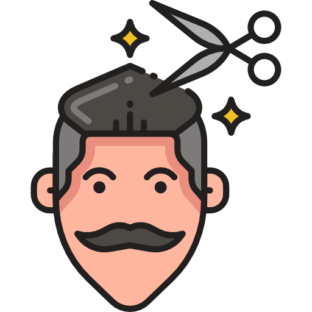

uma - cabeza
uya - cara
aqcha - cabello
ulku - frente
ñawi - ojo
qichipra - pestaña
ulku wacha - ceja
linli - oreja
shimi - boca
willpa - labio
kunka - cuello
killu - diente
qallu - lengua
sinqa ućhku - fosas nasales
kakichu - mentón
wiqi - lágrima
śhapla - barba, bigotelinli wila - cerumen ñawi lulu - pupila ñuti - moco wacha - vello del cuerpo kakichu - quijada 
pata - barriga
pupu - ombligo
waśha - espalda
wiqaw - cintura
qasqu - pecho
siki - traseroluntu lunku - escroto lani - pene luntu - tésticulo chichi - tetilla ñuñu, chuchu - tetilla laka - vagina shiputi - ano 
maki - mano
maki palta - palma de la mano
rukana - dedomaki lawkana - dedo de la mano 
śhillu - uñamaki śhillu - uña de la mano 
likla - hombro, brazo
kuchuśh - codo
wallwikchu - axilaqipa / maman maki - antebrazo 
ćhaki - piećhaki lawkana - dedo del pie 
ćhaki palta - planta del pietakillpa - talón ćhaki pilulu - tobillo 
ćhaki wiksa - pierna
muqu qunqul - rodillaWichum - músculo panku - muslo ćhanka - entrepierna muqu - articulación karan - piel 
waśhatullu - columna vertebral
matanka - cerebro
pata, wiksa - estómago
śhunqu, puywan - corazón
lulu - riñonishpay puku, pukuchu - vejiga 
tita chunchul - intestino grueso
ñañu chunchul, allakshi - intestino delgadowalaśh kay - órgano reproductor masculino wamla kay - órgano reproductor femenino hayap - vesícula 
ñati, kipchan - hígadollulluq - óvulo llupu - útero paaris - placenta 
hapsan - pulmóntunkuśh - tráquea tunkuri - faringe wawi muhu pulinan - trompas de falopio wawi muhu milachiq - ovario wawi muhu - óvulo wawi lunku - útero 
tullu - huesoyawar - sangre qayan - vesícula bilial ćhupi - vulva 
uma tullu - cráneo
nuna tullu - esqueleto
waqta - costilla
usa kanćha - clavícula-
Partes de la cabeza 1
Partes de la cabeza 2
-
Partes del tronco 1
-
Partes 5
- umam - es cabeza
- uyam - es cara

aqcham - es cabello- ñawim - es ojo
Sapa - aumentativo
Sikisapa wamla - mujer con trasero prominente
Ñuñusapa - senos generosos
Umasapa - cabeza grande, cabezón
Sinqasapa - nariz grande, narizon
Linlisapa - oreja grande, orejos
Limaysapa - orador
Siki - peyorativo
Limaysiki - chamullero
Gramática: napaq - para, por. El sujifo na aparece para acompañar a paq cuando la raíz es un verbo
Maki chalanapaqmi - La mano es para agarrar. CHALAY. tr. Agarrar, tomar, coger
Uya llutanapaqmi - La cara es para pintar. LLUTAY. tr. Pintar, ungir, untar.
Linlikuna uyalinapaqmi - Las orejas es para escuchar. UYALIY. tr. Escuchar, obedecer, hacer caso.
Maki laptanapaqmi - La mano es para tocar. LAPTAY. palpar, tocar
Ñawi likanapaqmi - el ojo es para mirar. LIKAY. tr. Ver, mirar.
Kilu kaćhunapaqmi - El diente es para masticar. KATRUY. tr. Morder, masticar algo duro o crocante.
Takillpa pulinapaqmi - El talón es para caminar. PULIY. intr. Caminar, andar.
Takillpa pulinapaqmi - El talón es para saltar. PATRKAY. intr. Saltar.
Luntukuna chulikuynapaqmi - Los huevos son para engendrar. CHULIKUY. intr. Engendrar.
Shimi mikunapaqmi - La boca es para comer. MIKUY. int. Comer.
śhillukuna tipshinapaqmi - Las uñas son para pellizcar. TIPSHIY. tr. Picotear, pellizcar.
Maki lawkana taqllanapaqmi - Los dedos de la mano son para amasar. TAQLLAY. Intr. Palmetear, aplaudir. // Amasar el pan.
Maki yanunapaqmi - La mano es para cocinar. YANUY. tr. Cocinar.
Sinqa muskinapaqmi - La nariz es para oler. MUSKIY. tr. Oler, olfatear.
Laka wawikunapaqmi - La vagina es para engendrar. WAWIKUY. intr. Engendrar.